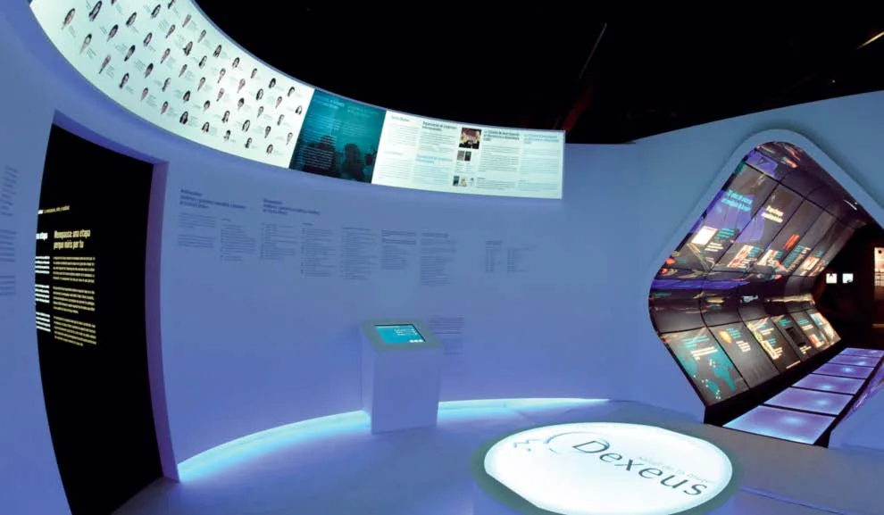
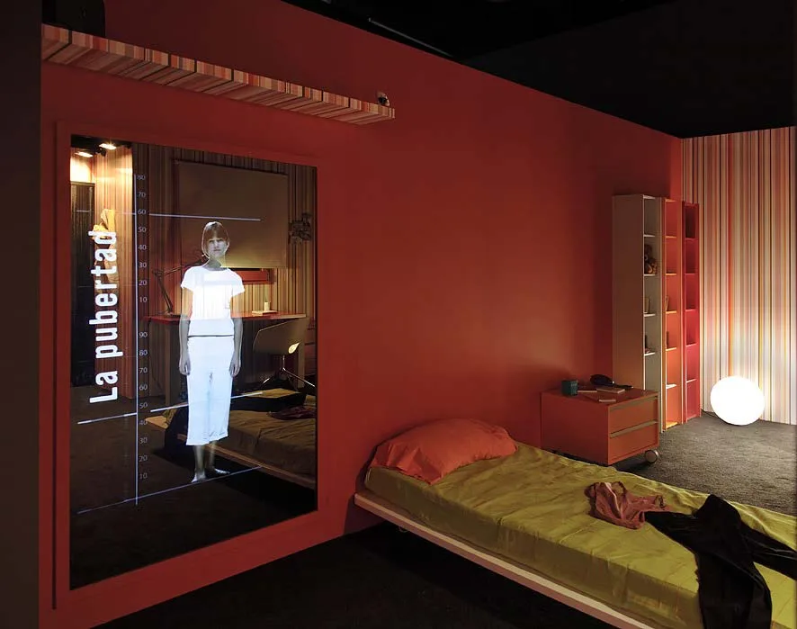

Cultura y museografía
Mujer. Un cuerpo, una vida
Fundación Santiago Dexeus Font · Barcelona y Valencia
Dirección de proyecto. Emilio Medina

01
Contexto
Una exposición sobre el cuerpo, la salud y las etapas de la vida de la mujer, en su contexto social e histórico.
02
Necesidad
Acercar conocimiento médico mediante diferentes niveles de lectura y una experiencia de visita accesible.
03
Estrategia
Dirigí el proyecto reuniendo relato, escenografía, audiovisuales y recursos interactivos. El desarrollo de contenidos contó con la supervisión de especialistas médicos de la Fundación.
04
Impacto
La exposición permitió recorrer las etapas de la vida de la mujer con diferentes niveles de lectura, desde la interpretación gráfica hasta las proyecciones envolventes.


Créditos y alcance
Fundación Santiago Dexeus Font y especialistas médicos colaboradores. Diseño y realización: Optimus Medina Relay.
¿Qué tienes entre manos?
Podemos empezar por una necesidad concreta o por una idea que aún necesita forma.